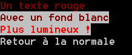
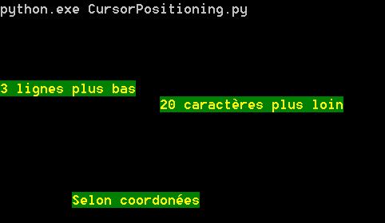
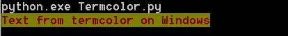

colorama¶
Par Killian Castella [1]
Introduction¶
Les caractères d’échappement ANSI sont depuis longtemps utilisé pour produire des terminaux colorés et déplacer le curseur d’écriture dans les terminaux Unix. Seulement, ces caractères d’échappement ne sont pas compatibles avec le terminal natif de Windows. La bibliothèque externe de python Colorama est la pour palier à ce problème en convertissant ces caractères en appels win32 appropriés.
Grace à Colorama il est possible d’utiliser de nombreuses bibliothèques se basant sur Les caractères d’échappement ANSI d’être utilisées sur Windows.
Pour résumer, Colorama est une bibliothèque python multiplateforme pour afficher des terminaux colorés en Python.
Exemples¶
Fonctionalités de base¶
Pour commencer avant d’utiliser colorama il faut importer les fonctionnalités désirées et initialiser colorama :
>>> from colorama import Fore, Back, Style
>>> init()
On peut ensuite utiliser les diverses fonctionnalités :
- Fore : Permet de changer la couleur de l’arrière-plan.
- Back : Permet de changer la couleur de l’écriture.
- Style : Permet de changer la brillance de la police
Et la liste des attributs associés :
Fore: BLACK, RED, GREEN, YELLOW, BLUE, MAGENTA, CYAN, WHITE, RESET.
Back: BLACK, RED, GREEN, YELLOW, BLUE, MAGENTA, CYAN, WHITE, RESET.
Style: DIM, NORMAL, BRIGHT, RESET_ALL
Utilisation :
"""Modification des styles."""
from colorama import Back, Fore, Style, deinit, init
init()
print(Fore.RED + Style.NORMAL + 'Un texte rouge')
print(Back.WHITE + 'Avec un fond blanc')
print(Style.BRIGHT + 'Plus lumineux !')
print(Style.RESET_ALL + 'Retour à la normale')
deinit()
- Résultat :
- 
Pour arrêter colorama avant la fin du programme il suffit d’appeler deinit() :
>>> deinit()
Avant l’arrêt, Colorama va appeler Style.RESET_ALL afin de rétablir le style initial.
Déplacement du curseur¶
Il est également possible d’utiliser les sequences ANSI directement dans notre code , c’est de cette manière que nous pouvons également déplacer le curseur.
"""Déplacement du curseur."""
from colorama import deinit, init
init()
# ici on définit notre style
print('\033[33;42;1m')
# deplacement du curseur à l'aide de n lignes
print('\033[3B'+'3 lignes plus bas')
# deplacement du curseur à l'aide de n lignes
print('\033[20C'+'20 caractères plus loin')
# deplacement du curseur à l'aide de coordonnées
print('\033[15;10f'+'Selon coordonées')
deinit()
\033 correspond au code octal en style C pour le caractère ESC. Les caractères qui se trouvent après le ‘[‘ sont les séquences ANSI.
- Résultat :
- 
Colorama ne convertit qu’une partie des séquences ANSI en appel win32. la liste des séquences prises en charge se trouve ici.
Utilisation d’une bibliothèque utilisant les caractères d’échappement ANSI¶
Certaines bibliothèques se basent sur les séquences ANSI pour colorer les terminaux et ne sont donc pas fonctionelles avec windows, Ici un exemple d’utilisation de termcolor sous windows :

On voit bien que tout n’est pas interpreté comme il se doit, C’est la qu’entre en jeu Colorama qui permet d’interpreter correctement ces séquences :
"""Utilisation de termcolor sous Windows."""
from colorama import init
from termcolor import colored
# use Colorama to make Termcolor work on Windows too
init()
# then use Termcolor for all colored text output
print(colored('Text from termcolor on Windows', 'red', 'on_yellow'))
Ce qui nous donne :

Conclusion¶
Colorama est une bibliothèque très simple d’utilisation et très utile pour faire fonctionner diverses autres bibliothèques se basant sur les séquences ANSI sous Windows. Il est également possible de l’utiliser en stand-alone pour certaines applications simples. Malheureusement en l’état actuel, il y a encore un grand nombre de séquences non prises en charge, ceci est toutefois probablement amené à changer étant donné que Colorama est mis à jour régulièrement.
| [1] | <killian.castella@he-arc.ch> |